layout: true class: slides-centered --- layout: true class: theme-whiskey, slides-left --- name: cover ## <span style="line-height: 1rem">Arbeit ganzheitlich denken</span><br style="height: 0"><span style="font-size: 1.45rem;margin-top: 0">Praxiserfahrungen aus dem Unternehmen Peerigon</span> <br> <br> <br> <br> <br> <br> Stephan Batteiger<br> stephan.batteiger@peerigon.com<br> +49 821 9078086-1 <img src="assets/unternehmenskultur-peerigon.jpg" class="rightImage introImage"> --- ### Mein Hintergrund 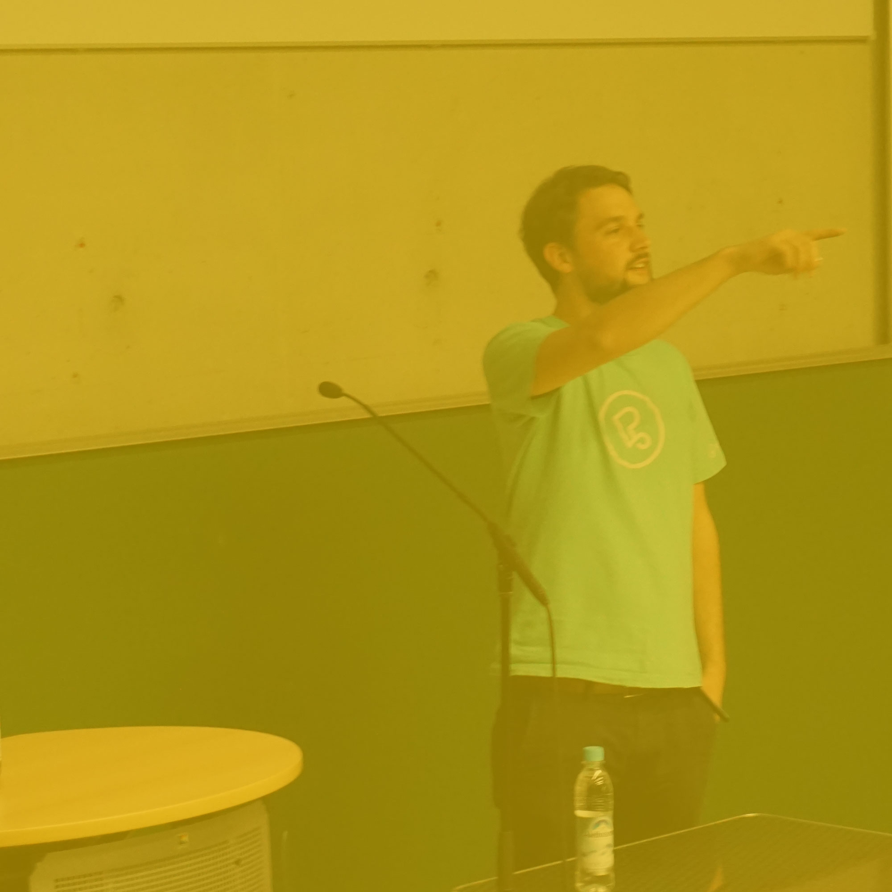 --- class: slides-chapter, theme-whiskey <div style="font-size: 2.3rem"> <span>Eine andere Welt ist möglich</span><br> <span>Um outro mundo é possível</span><br> <span>Another world is possible</span> </div> --- ### Euer Hintergrund 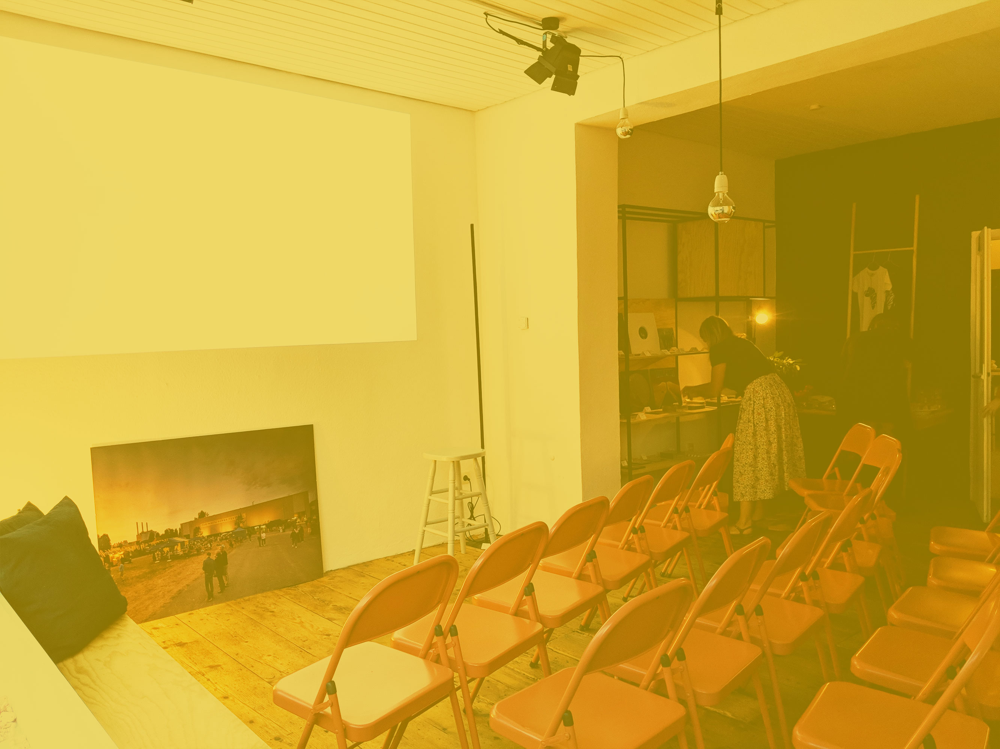 --- class: slides-chapter, theme-whiskey ## Agenda <ul> <li>Alltägliche Probleme in Unternehmen</li> <li>Die gute Basis</li> <li>Unternehmenskultur bei Peerigon</li> <li>Fazit & erste Schritte</li> </ul> --- layout: true class: slides-centered, theme-whiskey --- class: slides-chapter, theme-whiskey ### Alltägliche Probleme in Unternehmen --- layout: true class: slides-image-slider, theme-whiskey --- ### Alltägliche Probleme in Unternehmen? - Ängste --- layout: true class: slides-image-slider, theme-whiskey --- ### Alltägliche Probleme in Unternehmen? - Ängste - Egoismus --- layout: true class: slides-image-slider, theme-whiskey --- ### Alltägliche Probleme in Unternehmen? - Ängste - Egoismus - Keine Mitbestimmung --- layout: true class: slides-image-slider, theme-whiskey --- ### Alltägliche Probleme in Unternehmen? - Ängste - Egoismus - Keine Mitbestimmung - Penible Kontrolle --- layout: true class: slides-image-slider, theme-whiskey --- ### Alltägliche Probleme in Unternehmen? - Ängste - Egoismus - Keine Mitbestimmung - Penible Kontrolle - Machtkämpfe --- layout: true class: slides-image-slider, theme-whiskey --- ### Alltägliche Probleme in Unternehmen? - Ängste - Egoismus - Keine Mitbestimmung - Penible Kontrolle - Machtkämpfe - Missgunst --- layout: true class: slides-image-slider, theme-whiskey --- ### Alltägliche Probleme in Unternehmen? - Ängste - Egoismus - Keine Mitbestimmung - Penible Kontrolle - Machtkämpfe - Missgunst - Schuldzuweisungen --- layout: true class: slides-image-slider, theme-whiskey --- ### Alltägliche Probleme in Unternehmen? - Ängste - Egoismus - Keine Mitbestimmung - Penible Kontrolle - Machtkämpfe - Missgunst - Schuldzuweisungen - Mobbing --- layout: true class: slides-image-slider, theme-whiskey --- ### Alltägliche Probleme in Unternehmen? - Ängste - Egoismus - Keine Mitbestimmung - Penible Kontrolle - Machtkämpfe - Missgunst - Schuldzuweisungen - Mobbing - Sinnlose Arbeit --- layout: true class: slides-image-slider, theme-whiskey --- ### Alltägliche Probleme in Unternehmen? - Ängste - Egoismus - Keine Mitbestimmung - Penible Kontrolle - Machtkämpfe - Missgunst - Schuldzuweisungen - Mobbing - Sinnlose Arbeit - Ungerechtigkeit - ... --- ### Alltägliche Probleme in Unternehmen ⟹ - Unzufriedenheit --- ### Alltägliche Probleme in Unternehmen ⟹ - Unzufriedenheit - Demotivation --- ### Alltägliche Probleme in Unternehmen ⟹ - Unzufriedenheit - Demotivation - Mittelmaß --- ### Alltägliche Probleme in Unternehmen ⟹ - Unzufriedenheit - Demotivation - Mittelmaß - Unproduktivität --- ### Alltägliche Probleme in Unternehmen ⟹ - Unzufriedenheit - Demotivation - Mittelmaß - Unproduktivität - Krankheit --- ### Alltägliche Probleme in Unternehmen ⟹ - Unzufriedenheit - Demotivation - Mittelmaß - Unproduktivität - Krankheit - Umsatzeinbuße - ... --- class: slides-chapter, theme-whiskey ### Die gute Basis --- layout: true class: slides-image-slider, theme-whiskey --- ### Die gute Basis? - Wertschätzung / ehrliches Lob --- ### Die gute Basis? - Wertschätzung / ehrliches Lob - Persönliche und Unternehmensziele passen zusammen --- ### Die gute Basis? - Wertschätzung / ehrliches Lob - Persönliche und Unternehmensziele passen zusammen - Sinnvolle Arbeit --- ### Die gute Basis? - Wertschätzung / ehrliches Lob - Persönliche und Unternehmensziele passen zusammen - Sinnvolle Arbeit - Eigenverantwortliches Handeln --- ### Die gute Basis? - Wertschätzung / ehrliches Lob - Persönliche und Unternehmensziele passen zusammen - Sinnvolle Arbeit - Eigenverantwortliches Handeln - Fairness --- ### Die gute Basis? - Wertschätzung / ehrliches Lob - Persönliche und Unternehmensziele passen zusammen - Sinnvolle Arbeit - Eigenverantwortliches Handeln - Fairness - Offenheit & Feedbackkultur --- ### Die gute Basis? - Wertschätzung / ehrliches Lob - Persönliche und Unternehmensziele passen zusammen - Sinnvolle Arbeit - Eigenverantwortliches Handeln - Fairness - Offenheit & Feedbackkultur - Mitgestaltungsmöglichkeiten --- ### Die gute Basis? - Wertschätzung / ehrliches Lob - Persönliche und Unternehmensziele passen zusammen - Sinnvolle Arbeit - Eigenverantwortliches Handeln - Fairness - Offenheit & Feedbackkultur - Mitgestaltungsmöglichkeiten - Sozialer Austausch --- ### Die gute Basis? - Wertschätzung / ehrliches Lob - Persönliche und Unternehmensziele passen zusammen - Sinnvolle Arbeit - Eigenverantwortliches Handeln - Fairness - Offenheit & Feedbackkultur - Mitgestaltungsmöglichkeiten - Sozialer Austausch - Spielraum --- ### Die gute Basis? - Wertschätzung / ehrliches Lob - Persönliche und Unternehmensziele passen zusammen - Sinnvolle Arbeit - Eigenverantwortliches Handeln - Fairness - Offenheit & Feedbackkultur - Mitgestaltungsmöglichkeiten - Sozialer Austausch - Spielraum - Fehler machen dürfen --- ### Die gute Basis? - Wertschätzung / ehrliches Lob - Persönliche und Unternehmensziele passen zusammen - Sinnvolle Arbeit - Eigenverantwortliches Handeln - Fairness - Offenheit & Feedbackkultur - Mitgestaltungsmöglichkeiten - Sozialer Austausch - Spielraum - Fehler machen dürfen - Vertrauen --- ### Die gute Basis? - Wertschätzung / ehrliches Lob - Persönliche und Unternehmensziele passen zusammen - Sinnvolle Arbeit - Eigenverantwortliches Handeln - Fairness - Offenheit & Feedbackkultur - Mitgestaltungsmöglichkeiten - Sozialer Austausch - Spielraum - Fehler machen dürfen - Vertrauen - Persönliche Weiterentwicklung - ... --- ### Die gute Basis ⟹ - Lebendige und smarte Teams & Prozesse 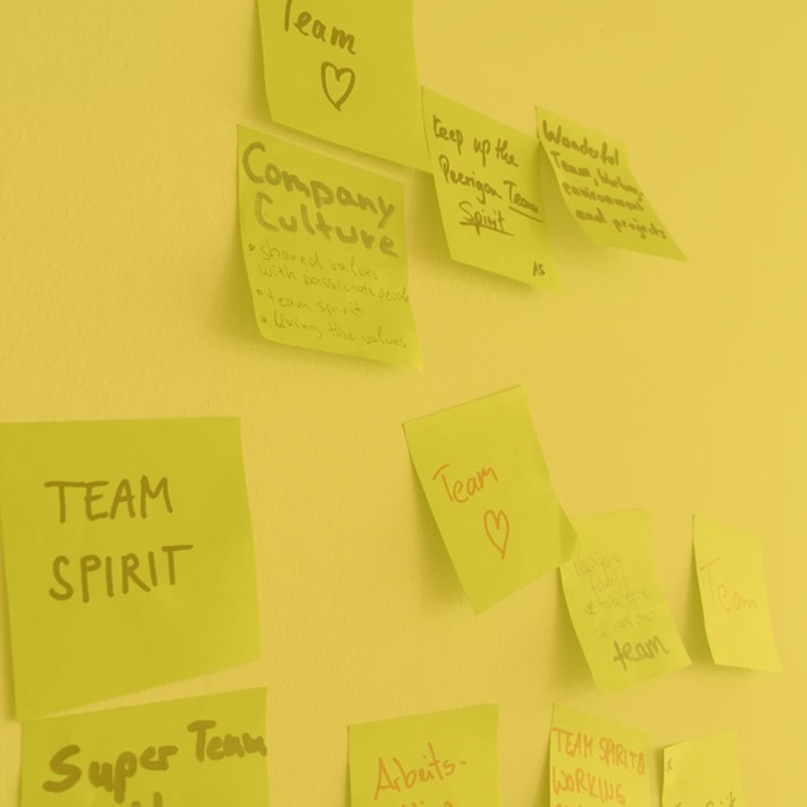 --- ### Die gute Basis ⟹ - Lebendige und smarte Teams & Prozesse - Zufriedenheit bei Team und Kunden --- ### Die gute Basis ⟹ - Lebendige und smarte Teams & Prozesse - Zufriedenheit bei Team und Kunden - Mund-zu-Mund-Propaganda --- ### Die gute Basis ⟹ - Lebendige und smarte Teams & Prozesse - Zufriedenheit bei Team und Kunden - Mund-zu-Mund-Propaganda - Unternehmenserfolg - ... --- class: slides-chapter, theme-whiskey ### <span style="font-size: 2rem">13 Aspekte</span><br><span style="font-size: 3.4rem">Unternehmenskultur bei Peerigon</span> --- layout: true class: slides-image-slider, theme-whiskey, aspects --- ### <span style="color: #e6be00">#1</span> Ideen und Transparenz #### Ursache - Ideen können online eingebracht werden - Entscheidungswege sind online einsichtig - Transparenz in allen Bereichen, auch bei Finanzen und Personalentscheidungen. Aber Schutz des Individiums 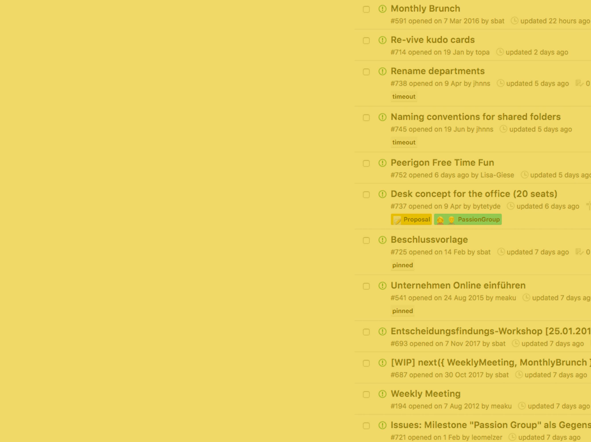 --- ### <span style="color: #e6be00">#1</span> Ideen und Transparenz #### Ursache - Ideen können online eingebracht werden - Entscheidungswege sind online einsichtig - Transparenz in allen Bereichen, auch bei Finanzen und Personalentscheidungen. Aber Schutz des Individiums #### Wirkung - Kreativität beim Team - Mitdenken im Team - Weiterentwicklung des Unternehmens - Entscheidungen werden vom Team verstanden, getragen und verbessert --- ### <span style="color: #e6be00">#2</span> Flache Hierarchien #### Ursache - Auf Augenhöhe - Die besseren Argumente gewinnen - Voneinander lernen Wollen 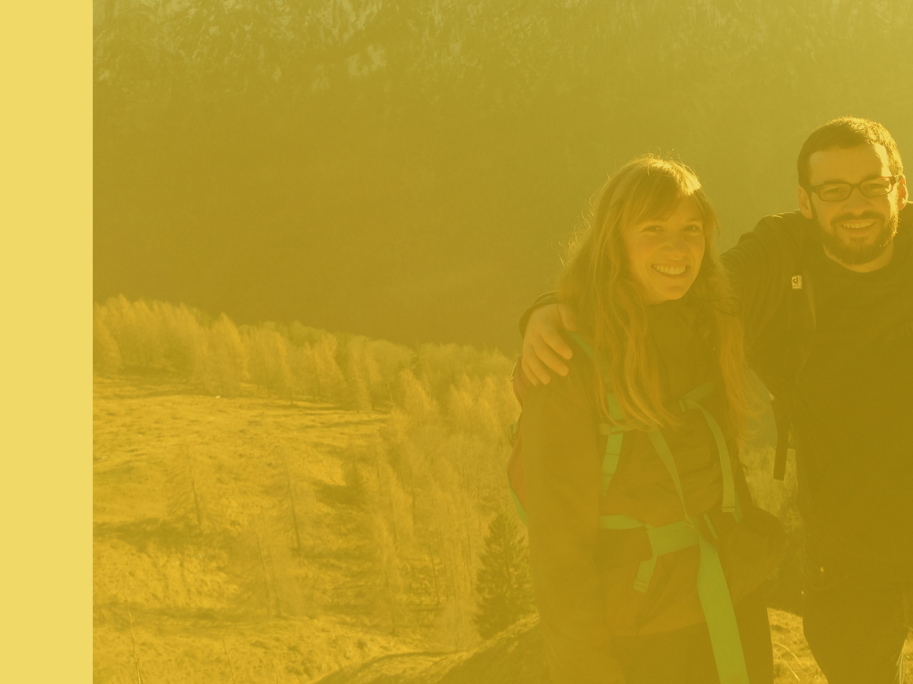 --- ### <span style="color: #e6be00">#2</span> Flache Hierarchien #### Ursache - Auf Augenhöhe - Die besseren Argumente gewinnen - Voneinander lernen Wollen #### Wirkung - Förderung des Mitdenkens und der Kreativität - Wertschätzung --- ### <span style="color: #e6be00">#3</span> Mitgestaltungsmöglichkeiten #### Ursache - Partizipation - Passion Groups: leidenschaftlicher Deep-Dive & Konzepte - Weekly Meeting: informieren, vorstellen & Feedback einholen - Monthly Meeting: Platz für besondere Themen - Konsens für Teamabstimmungen 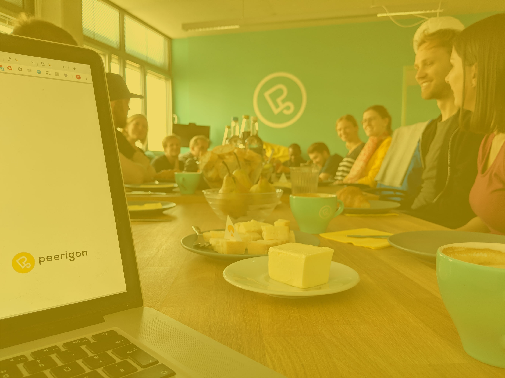 --- ### <span style="color: #e6be00">#3</span> Mitgestaltungsmöglichkeiten #### Ursache - Partizipation - Passion Groups: leidenschaftlicher Deep-Dive & Konzepte - Weekly Meeting: informieren, vorstellen & Feedback einholen - Monthly Meeting: Platz für besondere Themen - Konsens für Teamabstimmungen #### Wirkung - Mehr Diskussionen am Anfang, dafür fast keine Diskussionen danach - Das Team versteht und trägt die Entscheidung - Identifizierung - Erfüllung --- ### <span style="color: #e6be00">#4</span> Unternehmensziele #### Ursache - Team-Blitzlicht als Input für die Unternehmensziele - Erarbeitung der Unternehmensziele mit den Ressortleiter:innen und einer Vertrauensperson - Formeller Beschluss der Unternehmensziele durch die Gründer - Erarbeitung der Konzepte in Passion Groups --- ### <span style="color: #e6be00">#4</span> Unternehmensziele #### Ursache - Team-Blitzlicht als Input für die Unternehmensziele - Erarbeitung der Unternehmensziele mit den Ressortleiter:innen und einer Vertrauensperson - Formeller Beschluss der Unternehmensziele durch die Gründer - Erarbeitung der Konzepte in Passion Groups #### Wirkung - Mitgestalten des Unternehmens - Kreativität - Besseres Kommitment des Teams - Neuausrichtung des Unternehmens - Zukunftsfähigkeit --- ### <span style="color: #e6be00">#5</span> Faire<span style="color: #e6be00">re</span> Gehälter #### Ursache - Gehaltsstufe nach Wochenarbeitszeit & Level<br>(Consultant, Senior, Junior & Apprentice) - Eingruppierung des Levels auf Grundlage von<br>Team- und Selbsteinschätzung, Berufserfahrung, ... - Regelmäßige Überarbeitung des Gehaltsmodells im Team - Zuschüsse wie Fahrt- und Reisekosten, Fahrrad,<br>Car Sharing, Essenszuschüsse, ... --- ### <span style="color: #e6be00">#5</span> Faire<span style="color: #e6be00">re</span> Gehälter #### Ursache - Gehaltsstufe nach Wochenarbeitszeit & Level<br>(Consultant, Senior, Junior & Apprentice) - Eingruppierung des Levels auf Grundlage von<br>Team- und Selbsteinschätzung, Berufserfahrung, ... - Regelmäßige Überarbeitung des Gehaltsmodells im Team - Zuschüsse wie Fahrt- und Reisekosten, Fahrrad,<br>Car Sharing, Essenszuschüsse, ... #### Wirkung - Gute Team- & Selbsteinschätzung - Klarheit über Weiterentwicklungsmöglichkeiten - Fairness & kein Gender Pay Gap --- ### <span style="color: #e6be00">#6</span> Ausgewählte Projekte #### Ursache - Ethische Richtlinien bei der Projektauswahl mit zukünftigem Fokus auf sinnstiftende Projekte - Auch technologisch anspruchsvoll, Open Source, zukunftsweisend, ... - Verwirklichung von persönlichen Zielen --- ### <span style="color: #e6be00">#6</span> Ausgewählte Projekte #### Ursache - Ethische Richtlinien bei der Projektauswahl mit zukünftigem Fokus auf sinnstiftende Projekte - Auch technologisch anspruchsvoll, Open Source, zukunftsweisend, ... - Verwirklichung von persönlichen Zielen #### Wirkung - Geringere Burnout-Gefahr - Motivierend - Begeisterung - Erfüllung --- ### <span style="color: #e6be00">#7</span> Weiterbildungen & Vorträge #### Ursache - Besuche von Konferenzen, Meetups, ... - Zeit zum Experimentieren - Fördern von Vorträgen & Veröffentlichungen 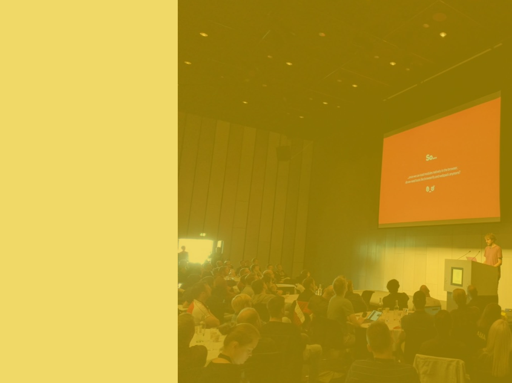 --- ### <span style="color: #e6be00">#7</span> Weiterbildungen & Vorträge #### Ursache - Besuche von Konferenzen, Meetups, ... - Zeit zum Experimentieren - Fördern von Vorträgen & Veröffentlichungen #### Wirkung - Innovativ bleiben - Team-Building - Neue Aufträge --- ### <span style="color: #e6be00">#8</span> Gemeinsame Werte #### Ursache - Gemeinsame Werte und Ansprüche, wie beispielsweise <br>ethische Standards, Nachhaltigkeit, Datenschutz, Fairness, <br>lernen wollen, hohe Qualität, ... - Spenden - B Corporation --- ### <span style="color: #e6be00">#8</span> Gemeinsame Werte #### Ursache - Gemeinsame Werte und Ansprüche, wie beispielsweise <br>ethische Standards, Nachhaltigkeit, Datenschutz, Fairness, <br>lernen wollen, hohe Qualität, ... - Spenden - B Corporation #### Wirkung - Klare und gute Entscheidungen (die getragen werden) - Keinen Schaden anrichten & postiven Beitrag leisten - Vorbildcharakter - Identifizierung --- ### <span style="color: #e6be00">#9</span> Diversität #### Ursache - Aktive Förderung von Diversität - Bekennung zur [Charta der Vielfalt](https://www.charta-der-vielfalt.de/) 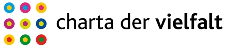 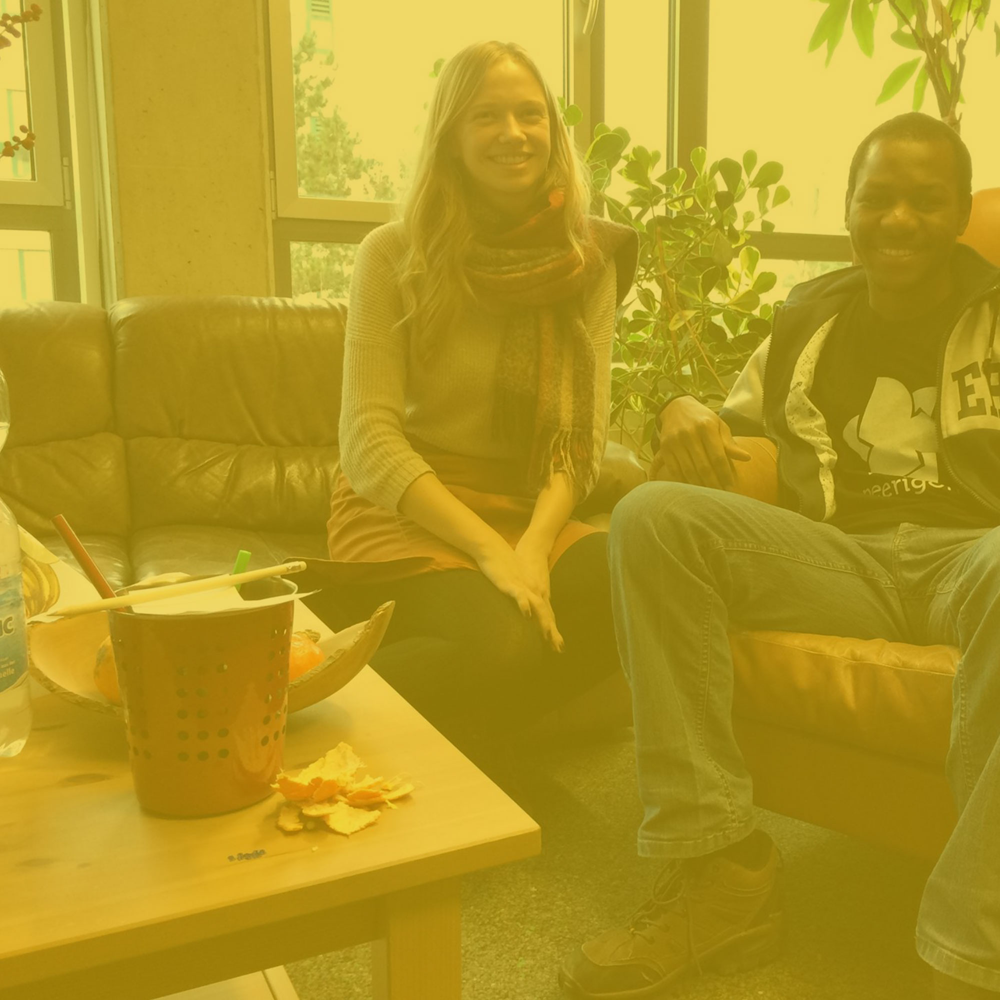 --- ### <span style="color: #e6be00">#9</span> Diversität #### Ursache - Aktive Förderung von Diversität - Bekennung zur [Charta der Vielfalt](https://www.charta-der-vielfalt.de/) #### Wirkung - Weltoffener - Differenzierter - Kreativer --- ### <span style="color: #e6be00">#10</span> Nachhaltigkeit #### Ursache - Gesellschaftliche Verantwortung übernehmen (Nahrung, Elektronik, Merchandising, Energie, Büro, Transport, Partner, ...) - CO2 Neutral 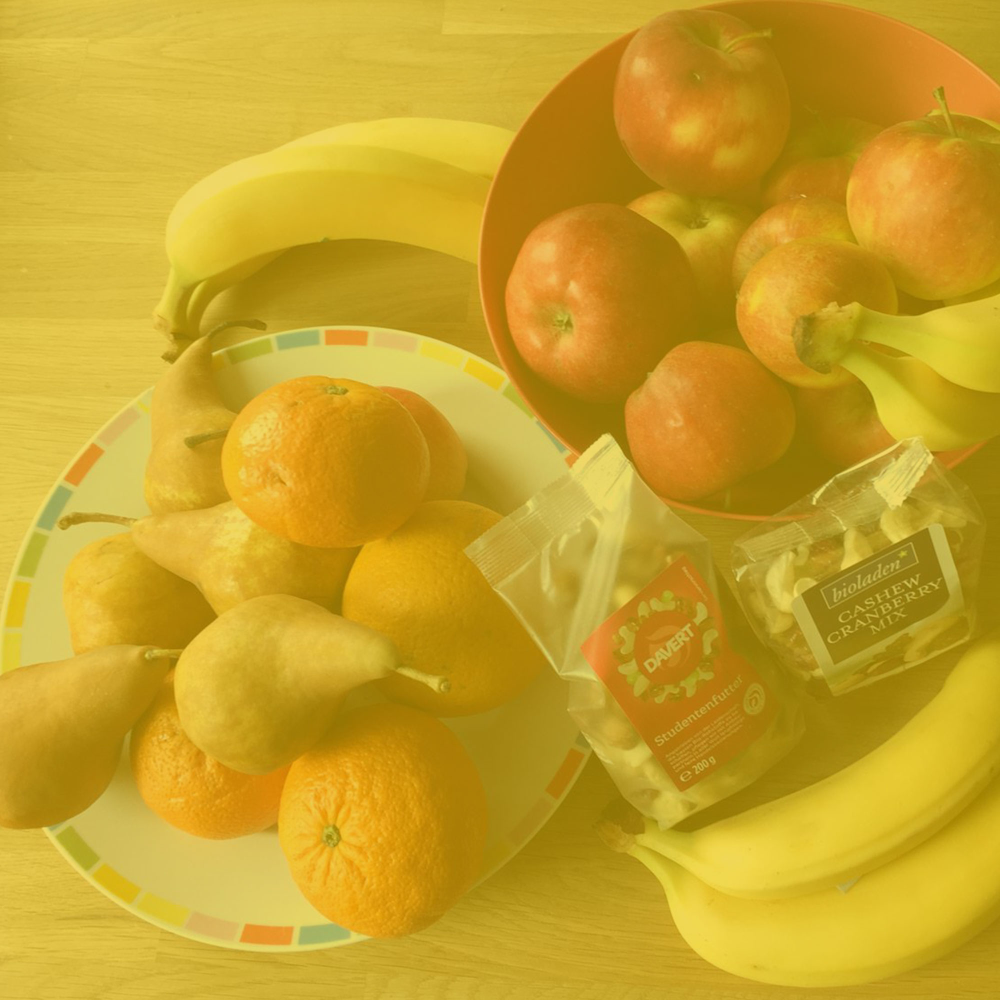 --- ### <span style="color: #e6be00">#10</span> Nachhaltigkeit #### Ursache - Gesellschaftliche Verantwortung übernehmen (Nahrung, Elektronik, Merchandising, Energie, Büro, Transport, Partner, ...) - CO2 Neutral #### Wirkung - Vorbildfunktion - Schnellere Entscheidungen, da weniger Optionen - Identifizierung --- ### <span style="color: #e6be00">#11</span> Gute Arbeitsumgebung #### Ursache - Mobiles Arbeiten, nicht erst seit Corona - Ergonomische Arbeitsplätze - Meeting auch beim Spazierengehen - Getränke und Obst kostenfrei, aber nichts Ungesundes --- ### <span style="color: #e6be00">#11</span> Gute Arbeitsumgebung #### Ursache - Mobiles Arbeiten, nicht erst seit Corona - Ergonomische Arbeitsplätze - Meeting auch beim Spazierengehen - Getränke und Obst kostenfrei, aber nichts Ungesundes #### Wirkung - Abwechslung - Gesundheit - Wenig Bürokratie bzgl. Abrechnungen von beispielsweise Kaffee - Fokus auf das Wesentliche --- ### <span style="color: #e6be00">#12</span> Gute Work-Life-Balance #### Ursache - Sport auf Arbeitszeit - Keine Überstunden / aufeinander achten - Arbeiten von jedem Ort der Welt aus - Arbeiten zu jeder Zeit, wann man möchte - Sabbatical 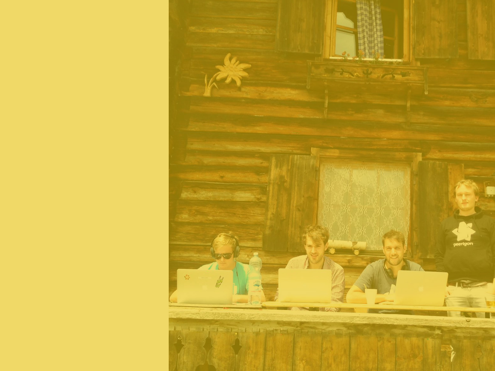 --- ### <span style="color: #e6be00">#12</span> Gute Work-Life-Balance #### Ursache - Sport auf Arbeitszeit - Keine Überstunden / aufeinander achten - Arbeiten von jedem Ort der Welt aus - Arbeiten zu jeder Zeit, wann man möchte - Sabbatical #### Wirkung - Gesundheit - Ausgeglichenheit - Platz um kreativ denken zu können - Vereinbarung privater und unternehmerischer Ziele --- ### <span style="color: #e6be00">#13</span> Zwischenmenschliches #### Ursache - Zusammen sein (Team-Events, Sommerfest, Geburtstagsevent, <br>Hüttenausflug, Weihnachtsfeier, Konferenzen, ...) - Gemeinsam an Projekten arbeiten --- ### <span style="color: #e6be00">#13</span> Zwischenmenschliches #### Ursache - Zusammen sein (Team-Events, Sommerfest, Geburtstagsevent, <br>Hüttenausflug, Weihnachtsfeier, Konferenzen, ...) - Gemeinsam an Projekten arbeiten #### Wirkung - Möglichkeit, sich auch mal anders kennen zu lernen - Förderung von Vertrauen und Zwischenmenschlichkeit --- layout: true class: slides-chapter, theme-whiskey --- ### Fazit <div style="font-size: 2.3rem"> <span>Eine andere Welt ist möglich</span><br> <span>Um outro mundo é possível</span><br> <span>Another world is possible</span> </div> --- layout: true class: slides-chapter, theme-whiskey --- ### Erste Schritte --- layout: true class: slides-image-slider, theme-whiskey --- ### Erste Schritte <span style="color: #e6be00">für Unternehmer 1) Akzeptieren, dass kein Mensch perfekt ist.<br> 2) Verstehen, dass wir gemeinsam kreativer und besser sind.<br> 3) Möglichkeiten schaffen, Feedback zu geben und Ideen einzubringen.<br> 4) Stück für Stück die Ideen weiterentwickeln und umsetzen.<br> 5) In Dinge investieren, die scheinbar nichts bringen. Es wird sich auszahlen. --- ### Erste Schritte <span style="color: #e6be00">für Mitarbeiter 1) Akzeptieren, dass kein Mensch perfekt ist.<br> 2) Verstehen, dass wir gemeinsam kreativer und besser sind.<br> 3) Möglichkeiten schaffen, Feedback zu geben und Ideen einzubringen.<br> 4) Stück für Stück die Ideen weiterentwickeln und umsetzen.<br> 5) Den Vorgesetzten bei einem Kaffee begeistern.<br> --- class: slides-chapter, theme-whiskey #### Los geht's: Seid kreativ! Stephan Batteiger<br> stephan.batteiger@peerigon.com<br> +49 821 9078086-1